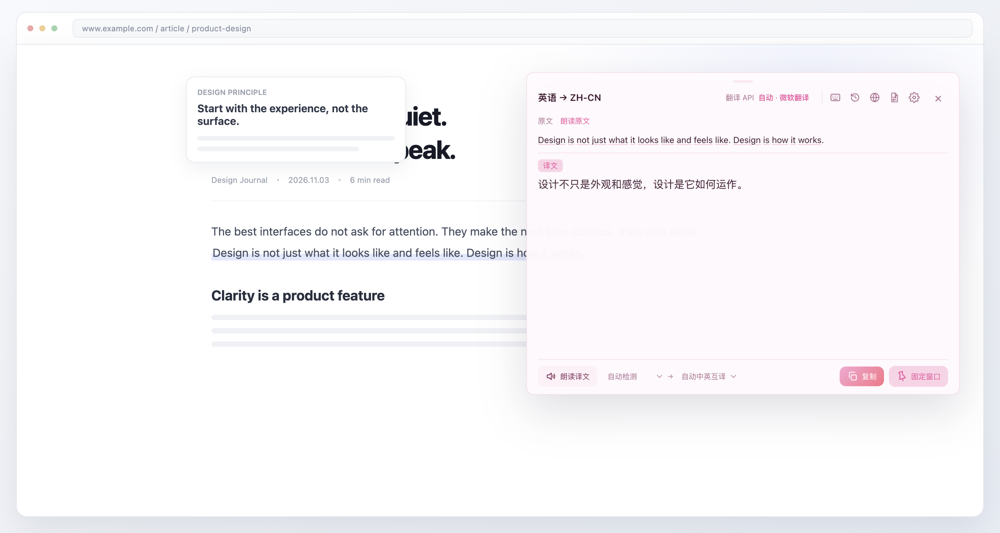
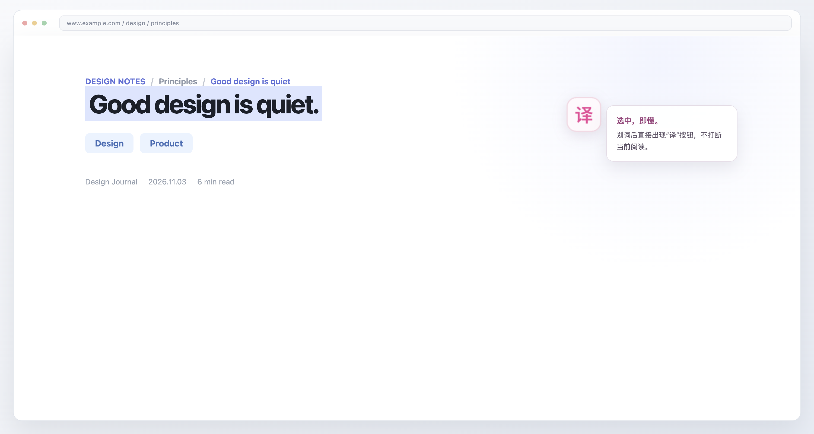
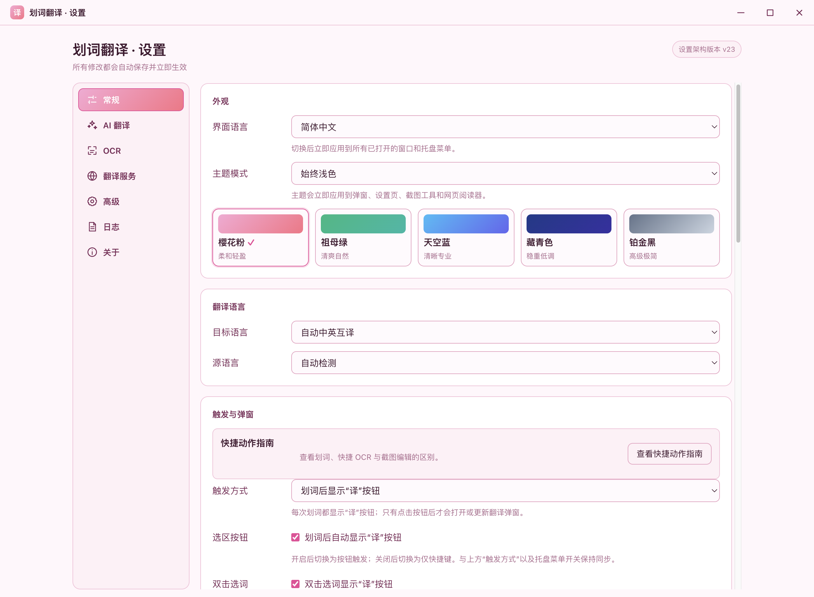
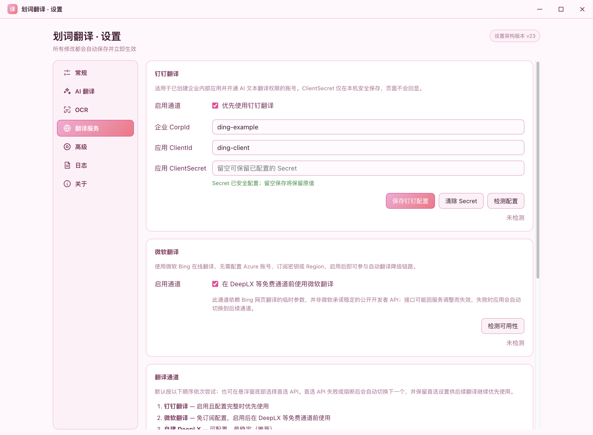
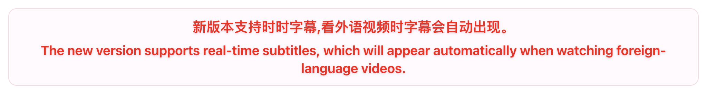

Alt + T
全局划词翻译
在浏览器、Office、PDF、聊天软件或 IDE 中选中文字，点击选区旁的「译」按钮，译文就在手边出现。也可以改为自动翻译或快捷键触发。
支持原生直读取词；直读不可用时才回退受控复制，尽量不打扰你的剪贴板。
桌面翻译工具 · V1.3.0
选中，即懂。
不用复制粘贴，不打断阅读。让翻译出现在你正在看的地方。
When understanding gets in the way, the best interface is the one that gets out of it.
01 / WHAT IT DOES
从选中的一句话，到整页网页和整份文档。按你的阅读方式工作，不要求你先改变工作方式。
在浏览器、Office、PDF、聊天软件或 IDE 中选中文字，点击选区旁的「译」按钮，译文就在手边出现。也可以改为自动翻译或快捷键触发。
支持原生直读取词；直读不可用时才回退受控复制，尽量不打扰你的剪贴板。
图片、扫描 PDF、视频字幕、游戏界面，框选后在本机识字，再交给翻译通道。还能标注、打码、高亮与导出。
系统 OCR → PaddleOCR → Tesseract 自动回退。
内置阅读器把译文写回原文字位置，支持原文、译文与对照模式，也能识别并翻译页面图片中的文字。
只有点击「翻译此页」后才提取内容，不读取系统浏览器标签页。
导入一份文件，完成解析、OCR、翻译、左右对照与 PDF 导出。表格、图片和公式尽量保留原版式，支持「保留版式」和「左右双语」两种输出。
单文件工作台；批量翻译与 PPTX / XLSX 暂不在当前版本范围内。
看视频、开在线会议或上网课时，采集系统声音或麦克风，把语音实时转成双语字幕，悬浮显示在屏幕上，不懂的内容即刻可读。
支持 Deepgram、阿里云百炼、OpenAI Realtime、自定义 WebSocket 与本地 Whisper；识别出的原文自动复用现有翻译通道。
02 / IN CONTEXT
不打开新网站，不切换应用。选中文字之后，翻译就停在你视线附近。
选区按钮、自动翻译、全局快捷键三种方式。弹窗可以固定、朗读、复制，也可以直接切换语言与翻译服务。





03 / BRING YOUR OWN
默认开箱可用。需要更快、更稳定或更私密时，再接上自己的服务。
支持 Ollama、OpenAI 兼容与 Claude Code（Anthropic）兼容协议。API Key 通过系统安全存储加密，不写入公开设置或日志。
可在线检测端点与模型，并自动拉取模型列表。服务费用与数据处理方式由你选择的服务商决定。
04 / PRIVACY BY DESIGN
截图和图片 OCR 默认在本机完成。只有识别出的文字，才会按你选择的翻译通道发送。
05 / ONE SMALL MOTION
在任何支持复制的应用里，选择你想理解的词或句子。
默认出现选区按钮；也可以设置为自动翻译或仅用快捷键。
译文显示在原文旁边。固定、朗读、复制，都只需要一次点击。
从选中文字到看见译文，完整演示划词翻译的主要流程。
06 / DOWNLOAD
下载最新版 V1.3.0。安装脚本会自动识别系统与 CPU 架构，并校验 SHA-256。
下载 DMG 或 ZIP，安装到「应用程序」。首次使用需授予辅助功能权限。
前往下载下载 NSIS 安装程序，运行向导即可。另提供 Windows 7 SP1 x64 专用兼容包。
前往下载下载 AppImage，赋予执行权限后运行。Wayland 下建议安装 wl-clipboard。
前往下载curl -fsSL https://raw.githubusercontent.com/zhq734/translation/master/scripts/install.sh | sh脚本只写入当前用户目录，并校验下载文件的 SHA-256。完整说明见 安装文档。
先确认已授予 macOS「辅助功能」权限，并检查设置中的触发方式不是「仅使用快捷键」。某些使用自绘控件或不支持系统复制的应用无法取词。修改权限或设置后，建议完全退出并重新启动应用。
不会。截图、页面截图、文档内嵌图片和公式裁剪图都在本机处理。只有识别出的文字会按当前翻译通道发送给对应服务。使用第三方翻译服务前，请评估其隐私政策。
需要选择一个语音识别渠道并填入对应的 API Key 或服务地址，例如 Deepgram、阿里云百炼，或本地部署的 Whisper 服务。识别出的原文会自动使用应用现有的翻译通道翻译，字幕以双语悬浮窗显示。
不强制。应用默认提供公共翻译通道，也可以选择免配置的微软网页翻译。若需要更稳定的体验，可配置自建 DeepLX、钉钉企业翻译，或 Ollama / OpenAI 兼容 / Claude Code 兼容的 AI 翻译。
支持现代 macOS（Apple Silicon / Intel）、Windows 10 / 11（x64 / arm64）与 Linux（x64 / arm64 AppImage）。另提供 Windows 7 SP1 x64 兼容包，但该运行时已停止安全更新，建议仅用于无法升级系统的环境。
公共 DeepLX 可能限流，Google 也可能受网络环境影响。应用会自动尝试后续通道。若仍不稳定，建议配置自建 DeepLX，并确认服务地址、端口与代理绕过规则正确。
READY WHEN YOU ARE
支持 macOS、Windows 与 Linux。免费使用，代码开源。